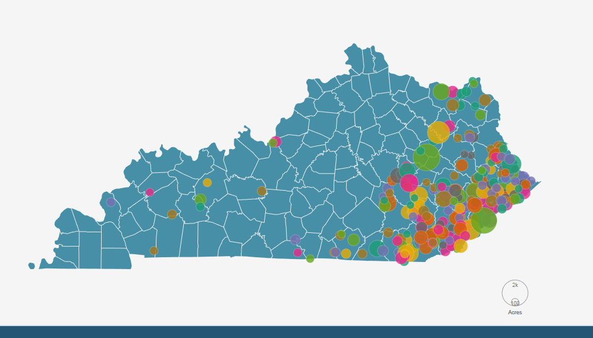

Interactive Quarry
UAV's and photogrammetry software create a 3D model that can be used to calculate the volume of a stockpile and contour lines. This page provides a way to deliver that information.
Power Generation
This interactive map shows the locations, energy by fuel and relative output for United States Power Stations that use two specified types of fuel.

Kenya School Enrollment
Kenyan School Enrollment by Gender and Grade - 2014

Wildfires in Kentucky 2000-2013
Large Wildfires in Kentucky 2000 - 2013 by cause and size
Denver Amenities
An Interactive Map showing after school programs, fire stations and food stores in the Denver metropolitan area.
My Hometown
Owensboro KY
Owensboro Kentucky is the BBQ Capital of the World. A couple of signature restaurants are marked along with other points of interest. My old bike route to work is included for fun.